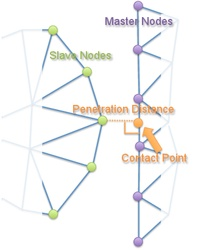

PenetrationLocator
A PenetrationLocator provides the perpendicular distance from a Secondary node to a Primary side and the "contact point" on the Primary side.
The distance returned is negative if penetration hasn't yet occurred and positive if it has.
To get a PenetrationLocator
#include "PenetrationLocator.h"and callgetPenetrationLocator(primary_id, secondary_id)to create the object.The algorithm in PenetrationLocator begins by using a
NearestNodeLocatorsopatch_sizeis still important.After a nearest node is found, elements neighboring that node are checked to find a contact point. By default, the determination of "neighboring" relies on mesh topology and checks the elements which are directly connected to that node. For meshes in which a surface element may touch a node that is not one of its own nodes (such as Flex IGA meshes, or adaptively refined in 3D, preceding use with
setUsePointLocator(true)switches to a slower but more comprehensive octree-based algorithm.Most user interaction with a PenetrationLocator is likely to be through objects which inherit from
GeometricSearchInterface. Users can change the algorithm of PenetrationLocator by settingsearch_method=all_proximate_sideson such objects.
